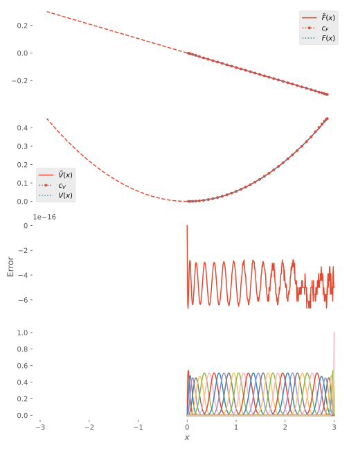
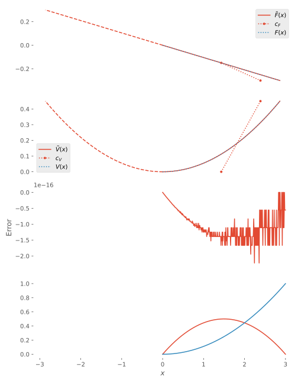

Ordinary differential equations
It is easy to solve ordinary differential equations using B-splines, as long as they are linear. For non-linear ODEs, the simplest way is most likely to linearize the equations, solve the resulting equation system (as illustrated below), and combining this with fixed-point iteration or Newton's method.
Hooke's law
A spring that is extended from its equilibrium point by $x$ experiences a restoring force
where $k$ is the spring constant. The potential energy of the spring is related to the force as
We can find this potential by solving a boundary value problem, expanding $F$ in B-splines. Since we do not know the values of $V(x)$ at the edges of the domain, we can employ the fact that the restoring force is antisymmetric and that $V(0)=0$, and solve the problem on the half-domain $[0,x_{\textrm{max}}]$. This turns the problem into an initial-value problem.
We proceed as indicated in Solving equations:
julia> function ode_hookes_law(xₘₐₓ, kspring, k, N)
t = LinearKnotSet(k, 0, xₘₐₓ, N)
# By omitting the first basis function, we enforce V(0) = 0
B = BSpline(t)[:,2:end]
S = B'B
D = Derivative(axes(B, 1))
∇ = B'D*B
# Hooke's law
F = x -> -kspring*x
# Expand Hooke's law on B-splines
cF = B \ F
# Solve for expansion coefficients of potential
cV = -∇ \ S*cF
cF,cV
end
julia> cF,cV = ode_hookes_law(3, 0.1, 7, 30)
([-0.00166667, -0.005, -0.01, -0.0166667, -0.025, -0.035, -0.045, -0.055, -0.065, -0.075 … -0.235, -0.245, -0.255, -0.265, -0.275, -0.283333, -0.29, -0.295, -0.298333, -0.3], [2.90458e-16, 6.66667e-5, 0.000366667, 0.00116667, 0.00283333, 0.00583333, 0.00983333, 0.0148333, 0.0208333, 0.0278333 … 0.275833, 0.299833, 0.324833, 0.350833, 0.377833, 0.401167, 0.420367, 0.435067, 0.445, 0.45])We can compare the approximation with the exact potential, given by

However, since the restoring force is linear, the potential can at most be quadratic; furthermore, we only need one interval to solve the problem exactly:
julia> cF,cV = ode_hookes_law(3, 0.1, 3, 1)
([-0.15, -0.3], [0.0, 0.45])
Other boundary conditions, such as $y(a)=\alpha$, or $y'(a)=\beta$, do not yet have a simple implementation. This mean that it is not convenient (but not impossible) to solve boundary-value problems with other boundary conditions than $y(a)=y(b)=0$, or initial-value problems with other initial values than $y(a)=0$.